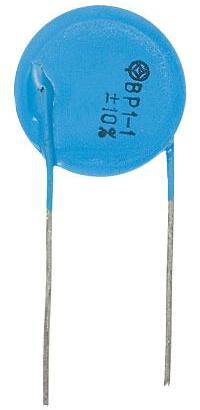
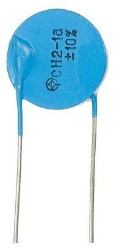
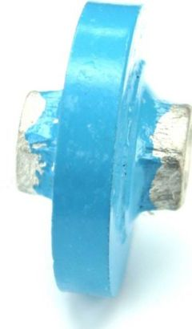

Варисторы ВР-1-1, СН2-1, СН2-2
Варисторы (Varistor) – оксидноцинковые или металлооксидные резисторы, способные резко уменьшать внутреннее сопротивление с тысяч Мом до десятков Ом как только напряжение на них превысит определенную параметрами величину. Вольт-амперная характеристика варистора симметрична, таким образом прибор в состоянии работать в цепях переменного тока.
 |
 |
 |
| ВР-1-1 | СН2-1а | СН2-2а |
Внешний вид варисторов отечественного производства
Основными параметры, используемые при описании характеристик прибора:
- Un – условный параметр,используемый при маркировке. Классификационное напряжение, напряжение на варисторе при токе через него 1 мА;
- Um~ — действующее переменное максимально допустимое (среднеквадратичное) напряжение;
- Um= — постоянное максимально допустимое напряжение;
- P – номинальная средняя мощность рассеяния, которую прибор в состоянии рассеивать в течение длительного времени без изменения установленных параметров;
- W – максимальная допустимая поглощаемая энергия в джоулях (Дж), при воздействии одиночного импульса. От нее зависит, как долго может действовать перегрузка (с максимальной мощностью Pm) без опасности повредить варистор, т.е.: T=W/Pm
- Co – емкость варистора, измеренная в закрытом состоянии.
- Ipp – максимальный импульсный ток, для которого время нарастания/длительность импульса: 8/20 мкс;
| Тип варистора | Um=, В | Um~, В | Uп, В | W, Дж |
| ВР-1-1 | 8 | 6 | 10 | 0.18 |
| ВР-1-1 | 12 | 9 | 15 | 0.26 |
| ВР-1-1 | 18 | 14 | 22 | 0.56 |
| ВР-1-1 | 22 | 17 | 27 | 0.64 |
| ВР-1-1 | 26 | 20 | 33 | 0.71 |
| СН2-1а | 150 | 115 | 180 | 37.8 |
| СН2-1б | 18.0 | |||
| СН2-1в | 4.5 | |||
| СН2-1а | 170 | 130 | 200 | 42.0 |
| СН2-1б | 20 | |||
| СН2-1в | 5.0 | |||
| СН2-2А | 320 | 250 | 390 | 125 |
| СН2-2а | 81.9 | |||
| СН2-2б | 40 | |||
| СН2-2А | 350 | 275 | 430 | 138 |
| СН2-2а | 90.3 | |||
| СН2-2б | 43 |
Емкость для отечественных варисторов не указывается.